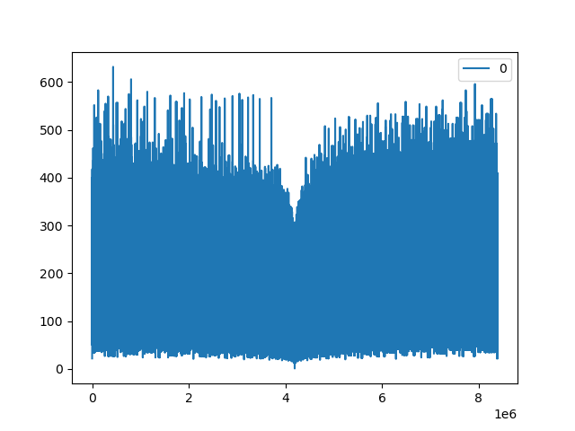

#!/usr/bin/env python # -*- coding: utf-8 -*- # # sequence.py # # Copyright 2020 William Martinez Bas <metfar@gmail.com> # # This program is free software; you can redistribute it and/or modify # it under the terms of the GNU General Public License as published by # the Free Software Foundation; either version 2 of the License, or # (at your option) any later version. # # This program is distributed in the hope that it will be useful, # but WITHOUT ANY WARRANTY; without even the implied warranty of # MERCHANTABILITY or FITNESS FOR A PARTICULAR PURPOSE. See the # GNU General Public License for more details. # # You should have received a copy of the GNU General Public License # along with this program; if not, write to the Free Software # Foundation, Inc., 51 Franklin Street, Fifth Floor, Boston, # MA 02110-1301, USA. # # Thanks for using this! metfar@gmail.com # import sys; from os import system; import inspect; try: raw_input; input=raw_input;#if python2, redefine input as raw_input (str_input) except: raw_input=input;#only if anyone want to use raw_input in python3 #************************************************************************ #constants RecursionLimit=10240; #set this to low value if CutWhenPattern is off #suggested: 30-400 CutWhenPattern=True;#Flag to stop searching when pattern is recognized CutSameValue=True;#if a number is repeated, the process ends #************************************************************************ LF="\n";#enter true=TRUE=True;#to avoid human error (mostly) false=FALSE=False; null=NULL=Nil=None; #Greeting _g=inspect.getsource(inspect.currentframe()).split(LF); if (not("x" in sys.platform.lower())): LF+="\r"; Greetings=LF+_g[-2+_g.index("")][2:].strip()+LF; HELP=""" %s requires at least one argument How to use it ------------- %s -?|-h|--help Shows this help %s -i|--interactive Enter into interactive mode (ask for input) %s 0 1 2 3 Batch process all the values as function input %s -r|--range 0 100 Process all numbers from 0 to 100 """; def clrscr(): system("cls || clear");#just call system cls or if it does not work, clear def trimNotNumeric(x,allowed="-.0123456789"): """ Eliminate any non-numeric character from x and output it as string; take care that x=[-1,-2] => out="-1-2" """ out=""; inp=str(x); for f in inp: if f in allowed: out+=f; return(out); def toNum(x): """ Convert input into a floating point number """ out=0.0;#default value try: out=float(str(x));#try to convert it into a floating point except: try: out=float(eval(trimNotNumeric(x)));#try trimming non-numeric # characters and then evaluate it because it could content operations except: pass; #we tried direct conversion and evaluated and it # didn't work so give up return(out); def function(i,interact=False): if(i%2 == 0): out=int(i/2); if(interact): print("Dividing "+str(i)+" by 2: "+str(out)+";",end=""); else: out=int(3*i+1); if(interact): print("Multiplying "+str(i)+" by 3 and adding one: "+str(out),end=""); if(interact): print(LF); return(out); def processNum(num,interact=False): counter=0; sequence=[num]; Cause="Recursion Limit"; finishThis=False;#condition of trapped in 4 2 1 sequence while(counter<RecursionLimit and not finishThis): sequence.append(function(sequence[-1],interact)); if(CutSameValue and sequence[-1]==sequence[-2]): finishThis=True;#if last two values are the same, finish (because 0) Cause="last=actual ("+str(sequence[-1])+"="+str(sequence[-2])+")"; if (CutWhenPattern and #flag to enable or disable pattern recognition ( sequence[-3:]==[4,2,1] #positive repetition sequence or sequence[-2:]==[-2,-1] #negative repetition sequence or (len(set(sequence))>2 and set(sequence[:-3])==set(sequence)) ) #Set of results 3 steps before is same as now (repetition) ):#repeating pattern finishThis=True; if(sequence[-3:]==[4,2,1]): Cause="Pattern [4,2,1]"; if(sequence[-2:]==[-2,-1]): Cause="Pattern [-2,-1]"; if (len(set(sequence))>2 and set(sequence[:-3])==set(sequence)): Cause="LoopStart "+str(sequence[-3:len(sequence)-2]) counter+=1; return(sequence,Cause); def main(args): APP=args.pop(0);#first argument is the name of this script if(len(args)<1 or (args[0].lower() in ["-?","-h","--help"])):#help print(HELP % tuple([APP]*HELP.count("%"))); return(1); if(args[0].lower() in ["-i","--interactive"]): #if interactive mode out=False; while(not out): clrscr(); num=int( #we want an integer toNum( #which must be a number (filter errors) input( #received from the user "Give me a number: " ) ) ); print(); sequence,Cause=processNum(num,interact=True); print("F("+str(sequence[0])+"):",sequence[1:]," End:",Cause,"#",len(sequence)-1); resp=input("\nDo you want to try with another number? (Yes/no)\n"); out="n" in resp.lower(); #if there is an N in your answer, it will exit return(0); if(args[0].lower() in ["-r","--range"]): #if interactive mode args.pop(0); try: _from=int(toNum(args.pop(0))); _to=int(toNum(args.pop(0))); except: print("\nPlease indicate two integers to mark the range to calculate\n"); return(1); if(_from>_to): _from,_to=_to,_from; for f in range(_from,_to+1): sequence,Cause=processNum(f); print("F("+str(sequence[0])+"):",sequence[1:]," End:",Cause,"#",len(sequence)-1); return(0); else:#non-interactive process while (len(args)>0): num=int(toNum(args.pop(0))); #take first argument off array sequence,Cause=processNum(num); print("F("+str(sequence[0])+"):",sequence[1:]," End:",Cause,"#",len(sequence)-1); return(0); return(128); if __name__ == '__main__': out=main(sys.argv); print(Greetings); sys.exit(out);
Give me a number: 16384
Dividing 16384 by 2: 8192;
Dividing 8192 by 2: 4096;
Dividing 4096 by 2: 2048;
Dividing 2048 by 2: 1024;
Dividing 1024 by 2: 512;
Dividing 512 by 2: 256;
Dividing 256 by 2: 128;
Dividing 128 by 2: 64;
Dividing 64 by 2: 32;
Dividing 32 by 2: 16;
Dividing 16 by 2: 8;
Dividing 8 by 2: 4;
Dividing 4 by 2: 2;
Dividing 2 by 2: 1;
F(16384): [8192, 4096, 2048, 1024, 512, 256, 128, 64, 32, 16, 8, 4, 2, 1] End: Pattern [4,2,1] # 14
Do you want to try with another number? (Yes/no)
Give me a number: -16384
Dividing -16384 by 2: -8192;
Dividing -8192 by 2: -4096;
Dividing -4096 by 2: -2048;
Dividing -2048 by 2: -1024;
Dividing -1024 by 2: -512;
Dividing -512 by 2: -256;
Dividing -256 by 2: -128;
Dividing -128 by 2: -64;
Dividing -64 by 2: -32;
Dividing -32 by 2: -16;
Dividing -16 by 2: -8;
Dividing -8 by 2: -4;
Dividing -4 by 2: -2;
Dividing -2 by 2: -1;
F(-16384): [-8192, -4096, -2048, -1024, -512, -256, -128, -64, -32, -16, -8, -4, -2, -1] End: Pattern [-2,-1] # 14
Do you want to try with another number? (Yes/no)
Give me a number: 0 Dividing 0 by 2: 0; F(0): [0] End: last=actual (0=0) # 1 Do you want to try with another number? (Yes/no)
Give me a number: 31 Multiplying 31 by 3 and adding one: 94 Dividing 94 by 2: 47; Multiplying 47 by 3 and adding one: 142 Dividing 142 by 2: 71; Multiplying 71 by 3 and adding one: 214 Dividing 214 by 2: 107; Multiplying 107 by 3 and adding one: 322 Dividing 322 by 2: 161; Multiplying 161 by 3 and adding one: 484 Dividing 484 by 2: 242; Dividing 242 by 2: 121; Multiplying 121 by 3 and adding one: 364 Dividing 364 by 2: 182; Dividing 182 by 2: 91; Multiplying 91 by 3 and adding one: 274 Dividing 274 by 2: 137; Multiplying 137 by 3 and adding one: 412 Dividing 412 by 2: 206; Dividing 206 by 2: 103; Multiplying 103 by 3 and adding one: 310 Dividing 310 by 2: 155; Multiplying 155 by 3 and adding one: 466 Dividing 466 by 2: 233; Multiplying 233 by 3 and adding one: 700 Dividing 700 by 2: 350; Dividing 350 by 2: 175; Multiplying 175 by 3 and adding one: 526 Dividing 526 by 2: 263; Multiplying 263 by 3 and adding one: 790 Dividing 790 by 2: 395; Multiplying 395 by 3 and adding one: 1186 Dividing 1186 by 2: 593; Multiplying 593 by 3 and adding one: 1780 Dividing 1780 by 2: 890; Dividing 890 by 2: 445; Multiplying 445 by 3 and adding one: 1336 Dividing 1336 by 2: 668; Dividing 668 by 2: 334; Dividing 334 by 2: 167; Multiplying 167 by 3 and adding one: 502 Dividing 502 by 2: 251; Multiplying 251 by 3 and adding one: 754 Dividing 754 by 2: 377; Multiplying 377 by 3 and adding one: 1132 Dividing 1132 by 2: 566; Dividing 566 by 2: 283; Multiplying 283 by 3 and adding one: 850 Dividing 850 by 2: 425; Multiplying 425 by 3 and adding one: 1276 Dividing 1276 by 2: 638; Dividing 638 by 2: 319; Multiplying 319 by 3 and adding one: 958 Dividing 958 by 2: 479; Multiplying 479 by 3 and adding one: 1438 Dividing 1438 by 2: 719; Multiplying 719 by 3 and adding one: 2158 Dividing 2158 by 2: 1079; Multiplying 1079 by 3 and adding one: 3238 Dividing 3238 by 2: 1619; Multiplying 1619 by 3 and adding one: 4858 Dividing 4858 by 2: 2429; Multiplying 2429 by 3 and adding one: 7288 Dividing 7288 by 2: 3644; Dividing 3644 by 2: 1822; Dividing 1822 by 2: 911; Multiplying 911 by 3 and adding one: 2734 Dividing 2734 by 2: 1367; Multiplying 1367 by 3 and adding one: 4102 Dividing 4102 by 2: 2051; Multiplying 2051 by 3 and adding one: 6154 Dividing 6154 by 2: 3077; Multiplying 3077 by 3 and adding one: 9232 Dividing 9232 by 2: 4616; Dividing 4616 by 2: 2308; Dividing 2308 by 2: 1154; Dividing 1154 by 2: 577; Multiplying 577 by 3 and adding one: 1732 Dividing 1732 by 2: 866; Dividing 866 by 2: 433; Multiplying 433 by 3 and adding one: 1300 Dividing 1300 by 2: 650; Dividing 650 by 2: 325; Multiplying 325 by 3 and adding one: 976 Dividing 976 by 2: 488; Dividing 488 by 2: 244; Dividing 244 by 2: 122; Dividing 122 by 2: 61; Multiplying 61 by 3 and adding one: 184 Dividing 184 by 2: 92; Dividing 92 by 2: 46; Dividing 46 by 2: 23; Multiplying 23 by 3 and adding one: 70 Dividing 70 by 2: 35; Multiplying 35 by 3 and adding one: 106 Dividing 106 by 2: 53; Multiplying 53 by 3 and adding one: 160 Dividing 160 by 2: 80; Dividing 80 by 2: 40; Dividing 40 by 2: 20; Dividing 20 by 2: 10; Dividing 10 by 2: 5; Multiplying 5 by 3 and adding one: 16 Dividing 16 by 2: 8; Dividing 8 by 2: 4; Dividing 4 by 2: 2; Dividing 2 by 2: 1; F(31): [94, 47, 142, 71, 214, 107, 322, 161, 484, 242, 121, 364, 182, 91, 274, 137, 412, 206, 103, 310, 155, 466, 233, 700, 350, 175, 526, 263, 790, 395, 1186, 593, 1780, 890, 445, 1336, 668, 334, 167, 502, 251, 754, 377, 1132, 566, 283, 850, 425, 1276, 638, 319, 958, 479, 1438, 719, 2158, 1079, 3238, 1619, 4858, 2429, 7288, 3644, 1822, 911, 2734, 1367, 4102, 2051, 6154, 3077, 9232, 4616, 2308, 1154, 577, 1732, 866, 433, 1300, 650, 325, 976, 488, 244, 122, 61, 184, 92, 46, 23, 70, 35, 106, 53, 160, 80, 40, 20, 10, 5, 16, 8, 4, 2, 1] End: Pattern [4,2,1] # 106 Do you want to try with another number? (Yes/no)
#!/usr/bin/env python
# -*- coding: utf-8 -*-
#
# plotting.py
#
# Copyright 2020 William Martinez Bas
#
# This program is free software; you can redistribute it and/or modify
# it under the terms of the GNU General Public License as published by
# the Free Software Foundation; either version 2 of the License, or
# (at your option) any later version.
#
# This program is distributed in the hope that it will be useful,
# but WITHOUT ANY WARRANTY; without even the implied warranty of
# MERCHANTABILITY or FITNESS FOR A PARTICULAR PURPOSE. See the
# GNU General Public License for more details.
#
# You should have received a copy of the GNU General Public License
# along with this program; if not, write to the Free Software
# Foundation, Inc., 51 Franklin Street, Fifth Floor, Boston,
# MA 02110-1301, USA.
#
# Thanks for using this! metfar@gmail.com
#
from sequence import *
import numpy as np;
import matplotlib.pyplot as plt;
import os;
import pandas as pd;
def main(args):
if (len(args)<2):
print(args[0]+" requires one filename as argument! ");
return(1);
name=args[1];
if (not (os.path.exists(name) and os.path.isfile(name))):
print("Couldn't open "+name+" or it doesn't exist!");
return(2);
arch=open(name,"r");
dat=[int(f) for f in arch.read().strip().split()];
data=pd.DataFrame(dat);
arch.close();
data.plot(kind="line");
#plt.plot(data);
plt.savefig(name+".png");
#plt.show();
print(" Filename: ",name);
print(" Data Length:",len(data));
print(" Data Average:",np.average(data));
print("Data Standard Deviation:",np.std(data));
print(" Graphic: ",name+".png");
return(0)
if __name__ == '__main__':
out=main(sys.argv);
print(Greetings);
sys.exit(out);

-oOo-